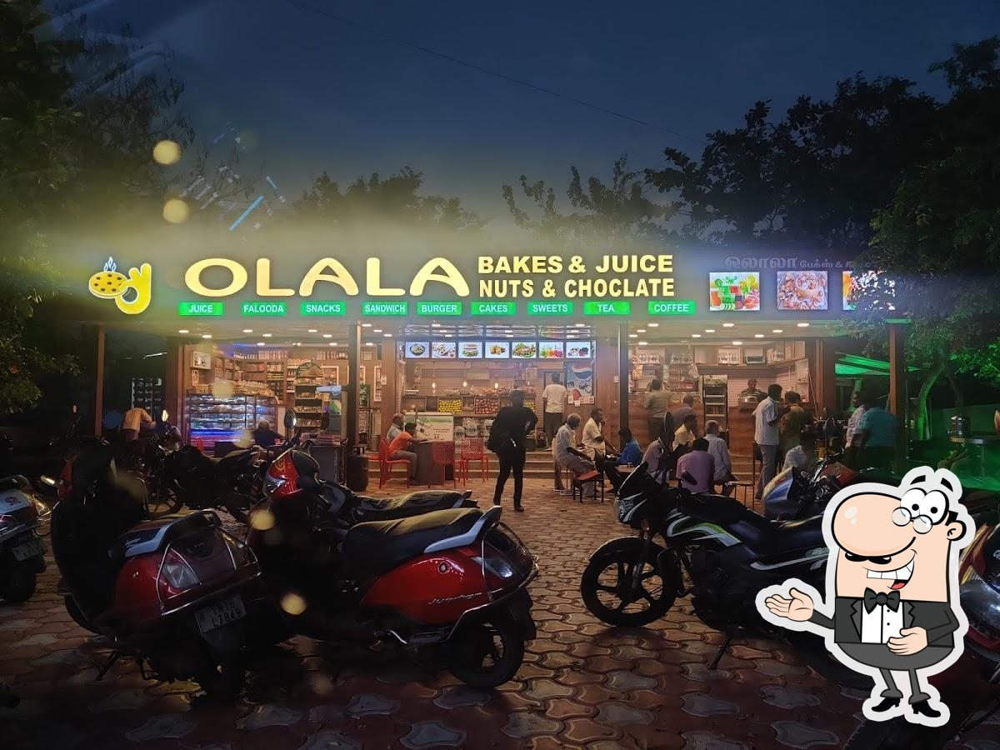

OLALA juice and snacks shop is a small eatery that offers a variety of fresh fruit juices, smoothies, and light snacks. These shops are popular for their quick service and refreshing menu, which often includes items like sandwiches, samosas, fries, and healthy bites. They are ideal for a quick break or a light meal, especially in busy areas like markets, schools, or office zones. Cleanliness, freshness, and affordability are key attractions of such shops.
Address: Chennai Highways,Elavanasur kottai
Phone: 9874563210
Email: support@olalajuiceandsnacks.com
Working Hours: Mon-Fri: 8:00 AM - 6:00 PM, Sat: 9:00 AM - 3:00 PM